5. Developing Geometry
In the end, the heart of the modeling process is the actual construction of the geometry. All the best measurement, organization, evaluation, and documentation would be ineffective unless the geometric shapes that make up a model are built and built correctly.
Basically, there are two steps to geometry development: (1) creating geometry, and (2) positioning geometry. Of course, as with all the other phases in the modeling process, there are different schools of thought as to how these steps should be accomplished, and each method has its own set of advantages and disadvantages.
Factors that need to be considered when deciding which methods to use include the convenience of building location and manner (e.g., building geometry at the origin or in an order that leverages previously defined measurements or mathematical calculations); the number of object replications that will be needed in the model; the ease of editing one or more of the replications; storage space; prep/rendering time; etc.
The following are some general tips regarding the efficient development of geometry in BRL-CAD:
-
Build the main structure first: As mentioned previously, it is a good idea to start building with the "main" object of a model. This could be the largest piece, the piece most central to the rest of the model, or a piece whose location represents a prominent corner or point. Much like on the assembly line of an automobile manufacturer, building the main frame first provides an overall model coordinate system for the rest of the smaller, secondary parts to reference. Also, for projects in which multiple modelers work on separate pieces simultaneously, starting with the main structure allows other pieces to be built in place or put in position immediately upon completion. This practice is more efficient in that it eliminates having extra parts floating around waiting to be positioned, and it provides a better picture of model completion throughout the project.
-
Know the four modeling levels and their differences: As shown in Table 4 (and discussed in Volume II [Butler et al., 2001]), all models built in BRL-CAD are built within the confines of its four modeling levels: (1) the primitive level, (2) the combination level, (3) the region level, and (4) the assembly level. Knowing the characteristics of these modeling levels is one of the first keys to developing effective geometry.
Table 1. The four modeling levels in BRL-CAD Modeling Level Description Primitive level (.s)
This level is where one performs three-dimensional (3-D) CAD "sculpting", working with the primitive shapes to represent the target geometry in coordinate space. Objects at this level are not recognized as having volume or material properties.
Combination level (.c)
This level is an optional intermediate level between primitives and regions or regions and assemblies. It allows Booleaned objects to be subtracted and intersected. All nonprimitive objects are stored as combinations.
Region level (.r)
This level is the lowest level at which geometry occupies 3-D space and can have material properties. It is where one assembles primitives and defines positive volume using Boolean logic. A region must be composed of one material, should be interconnected, and should perform the same function.
Assembly level (.a or .g)
This is the level at which subparts are organized into parts and parts are organized into assemblies. This is also where meaningful names and appropriate hierarchical structure are applied.
-
Know the major primitives and their constraints: Another key to good model building is to understand the required inputs, editing options, geometric characteristics, and relative advantages/disadvantages of the package’s basic "building blocks"--the primitive shapes. Although the package currently has more than 20 primary primitives (as well as another dozen developmental/special-use primitives), only a few of these primitives are used on a regular basis (see Table 5). That is not to say, of course, that less common shapes could not be used, but with some experience, users can begin to "see geometry" in a relatively small set of primitives and understand the data needed to produce accurate models.
Table 2. The major BRL-CAD primitives and parameters. Primitive Shape/BRL-CAD Abbreviation Input Parameters/Definitions [1] 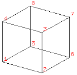Figure 1. Arbitrary convex polyhedron, 8 pts (arb8)-
8 vertices, 6 faces, and 12 edges
-
Each face must be a plane.
-
Illegal variations include the following:
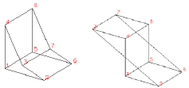
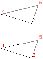Figure 2. Arbitrary convex polyhedron, 6 pts (arb6)-
6 vertices, 5 faces, and 9 edges.
-
Stored as an arb8, where point 8 is coincident with point 5 and point 7 is coincident with point 6
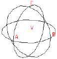Figure 3. Sphere (sph)-
Vertex, V.
-
Radii, A, B, C.
-
Stored as an ellipsoid (ell).
-
Vectors A, B, and C are mutually perpendicular.
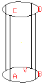Figure 4. Right circular cylinder (rcc)-
Vertex, V.
-
Radii, A, B, C, D.
-
Height vector, H (base-to-top distance).
-
Stored as a truncated general cone (tgc).
-
Vectors A and B have equal lengths, C and D have equal lengths, and all vectors are perpendicular to H.
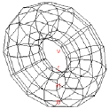Figure 5. Torus (tor)-
Vertex, V (center of hole).
-
Normal direction for the plane of the ring.
-
Radius 1 (radius from V to center of tube).
-
Radius 2 (radius of tube).
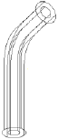Figure 6. Pipe (pipe)-
Outer diameter (OD).
-
Inner diameter (ID).
-
Bend radius (equivalent to an r1 value of a torus).
-
Each point contains X, Y, Z coordinates, OD, ID, and bend radius data.
-
Is effectively a subregion combination of cylinders and bounded tori whose path is defined by a series of coordinates.
For a list of all the primary primitives and their shapes, see Appendix C of BRL-CAD Tutorial Volume II (Butler et al., 2001) or consult http://ftp.arl.army.mil/brlcad/ (U.S. ARL, 2003). For detailed guidance on using the pipe and the extruded bitmap (ebm) primitives, see Appendices A and C of this volume.
-
-
Use the best command to build primitives: In addition to understanding the package’s basic building blocks and modeling levels, it is important to understand the behavior and advantages/disadvantages of its basic building "tools" (see Table 6). Using the right building command at the right time can maximize modeling efficiency by, in some cases, taking advantage of data from previously built geometry and saving measurement and/or input time.
-
Build objects in the most convenient location: Although coordinate systems vary according to the type of situation (e.g., converted geometry or group modeling, where a particular orientation has been established), BRL-CAD models are generally centered at the origin (x y z = 0 0 0), where the +X axis is front, the +Y axis is left, and the +Z axis is up.
For objects that are symmetrical in nature, this practice can take advantage of BRL-CAD’s mirroring operations and can provide simpler reference numbers for objects that are more complex in composition and/or orientation. In some cases, however, the modeler will find it makes more sense to build objects in place in the model. These include cases in which previously created objects offer convenient reference numbers for the object’s location/orientation and cases in which tangencies and other necessary calculations would be more difficult to derive with the object at the origin.
Note that there are traditional coordinate system conventions that some organizations use for their target descriptions (Ellis, 1992; Robertson et al., 1996; Winner et al., 2002). For a turreted vehicle, the origin is traditionally located at the intersection of the axis of the turret rotation and the ground surface. The +X axis points to the front of the vehicle, the +Y axis points toward the vehicle’s left, and the +Z points up (see Figure 6). For a nonturreted vehicle, the axes are the same, but there is no axis of rotation to provide a definitive reference point. So, the origin is located at the intersection of the ground surface and a convenient point along the left-right, mid-plane of the vehicle (see Figure 7). For fixed-wing and rotary-wing aircraft, the axes are the same, but the origin is located on the front nose of the airframe (see Figures 8 and 9).
Table 3. Various ways to build primitives. MGED Command Behavior Advantages/Disadvantages Method of Input create
Creates a “generic” primitive shape based on the user’s screen size and center.
Creates shape without having to input parameter/location values; primitive usually requires further editing; puts user into edit mode.
Graphical user interface (GUI)
make
Creates a “generic” primitive shape based on the user’s screen size and center.
Creates shape without having to input parameter/location values; primitive requires further editing.
Command line
in
Creates a new primitive shape according to user-input parameter values and location.
Allows user to create a shape in a specific size and location without having to further edit it.
Command line
inside
Creates a primitive shape by referencing a previously created shape and applying user-defined positive/negative thicknesses to faces (e.g., making an interior wall).
Allows user to create a shape based on a specified primitive by applying wall thicknesses without having to further edit it.
Command line
cp
Creates a duplicate of a previously defined object.
Copies the parameters of an object to a new object of the same type. Takes advantage of previously defined measurements and locations.
Command line
cpi (copy index)
Originally created to model wiring or piping runs; creates a duplicate cylinder whose base vertex is coincident with the top of the original cylinder.
Can only be used with cylinders; takes advantage of previously defined measurements and locations; puts user into edit mode automatically.
Command line
mirror
Creates a duplicate primitive shape, region, or assembly and locates it across the x axis, y axis, z axis, or an arbitrary axis specified by a point and a direction.
Takes advantage of previously defined measurements and locations; can mirror across only one axis at a time but across any point along that axis.
Command line
pattern
Creates a rectangular, spherical, or cylindrical pattern of primitive shapes, regions, or assemblies by referencing a previously created object and applying user-defined offsets and parameters.
Takes advantage of previously defined measurements and locations; requires extra positioning measurements.
GUI or command line
Note the in and inside commands are often the best ways to create a primitive in the right size/location if the modeler knows the parameters. Also, using the cp and mirror commands to create primitives can often save time by taking advantage of previously established measurements/positioning.
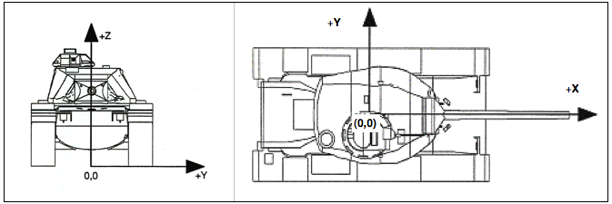Figure 7. Coordinate axes of a turreted ground vehicle.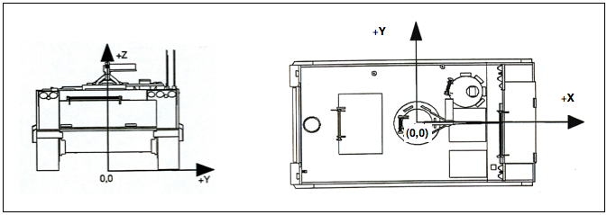Figure 8. Coordinate axes of a nonturreted ground vehicle.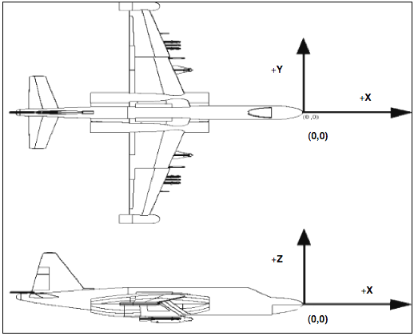Figure 9. Coordinate axes of a fixed-wing aircraft.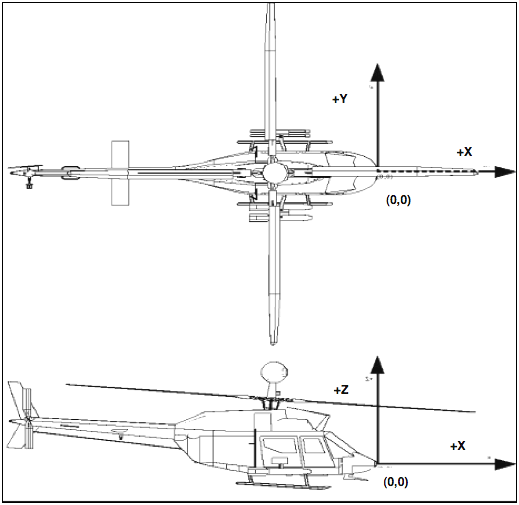Figure 10. Coordinate axes of a rotary-wing aircraft. -
Build multiple occurrences of objects in the most advantageous manner: Sometimes a modeler will have to make several occurrences of an object. For example, imagine modeling a box of new, identical pencils. Wouldn’t it be convenient to take advantage of the similarities involved? There are two basic techniques for constructing such collections. The first involves actually replicating geometry; the second involves referencing shared geometry.
Regardless of the technique used, the modeler typically starts by creating a prototype of the object. In the first technique (illustrated in Figure 10), the modeler creates complete copies of the object to be replicated. Each copy is then positioned within the model. In the second technique (illustrated in Figure 11), a "reference" combination that contains only the prototype is created. This combination is then positioned within the model.
As shown in Table 7, there are trade-offs to be considered when using each of these approaches. Construction effort is one of them. If the prototype consists of many objects or layers of structure, replication could be a tedious task. In the box of pencils, for example, all of the structure of the pencil would have to be duplicated, including the wood, eraser, barrel, and lead. On the other hand, if the referencing approach is used, then a relatively minor amount of work is needed to create the multiple occurrences.
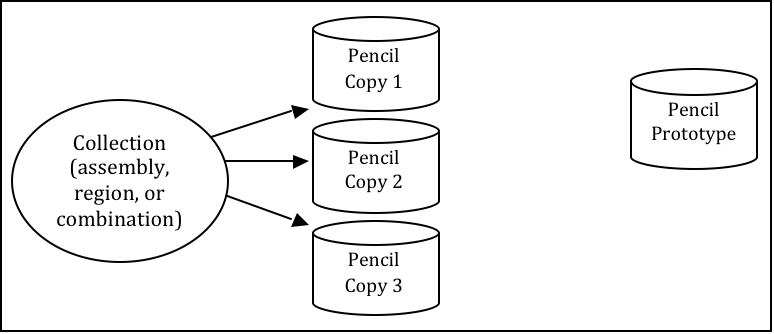Figure 11. Building multiple occurrences through replication.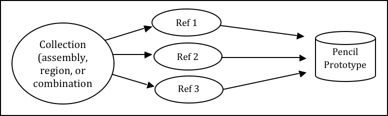Figure 12. Building multiple occurrences through referencing.Table 4. Advantages and disadvantages of replication vs. referencing. Duplication Method Advantages Disadvantages Replication
-
No matrices.
-
Faster prep time for raytracing.
-
More effort to construct.
-
Loss of update relationship between occurrences.
Referencing
-
Easier to create.
-
Changes to prototype propagate to all occurrences.
-
Uses less disk space when creating many occurrences of complex objects.
-
Does not provide a unique object, which is required by some analysis codes.
-
Prototype parameters do not reflect location and orientation of an individual reference.
Also, if the modeler wants to make a change to all of the objects (e.g., sharpening the point of the pencil), then the referencing approach has definite advantages. The prototype object is edited to incorporate the change, and all occurrences automatically reflect that change. However, if only one object is to be modified, then a copy of the prototype must be made, and the reference for that item must now refer to the copy. Not surprisingly, when this type of operation is to be performed often, the replication approach has definite advantages over the referencing approach.
Referencing also has the advantage that it can reduce the amount of disk space needed to store multiple copies of complex objects. The extra space needed to store each new occurrence on disk consists of the transformation matrix and the name of the object and reference combination. This can be significantly smaller than the replication of all the geometry that makes up the prototype.
It should be noted, however, that because some analysis codes require a unique identifier for each object in the database, some agencies require that all occurrences be replicated to the primitive level without matrices.
There are several other tools that can make the duplication process easier—namely, the Build Pattern tool and the keep and dbconcat commands. The Build Pattern tool, which is discussed in Appendix E, can help the modeler automatically generate multiple copies of geometry in rectangular, spherical, or cylindrical patterns. The keep command can be used to save portions of geometry, and the dbconcat command can be used to concatenate (add) them to other geometries or reinsert them into the existing database as copies.
-
-
Use the push command to eliminate matrices from replicated geometry: When the replication technique has been used to copy a particular piece of geometry, the
pushcommand is frequently used to walk the geometry tree from a specified top to the primitive level and collect the matrix transformations (i.e., any translations, rotations, or scales applied to the new assembly using matrix edits). The push command applies the matrix transformation to the parameters of the primitives, eliminating the need for storing the matrices. One disadvantage of this operation is that any local coordinate system used in constructing objects is lost. -
Use the best method for exporting and importing pieces of a database: Sometimes a modeler will want to save a portion of a model to be added to another database, to be reinserted into the original database as a copy, to be saved for future use, or to be edited as a new database (e.g., using a crew member or engine from one database in a different database). There are two commonly used methods to export and import geometry in BRL-CAD: (1) using the keep and dbconcat commands from the command line, or (2) using the export and import commands from the GUI.
For the first method, the keep command exports data either creating a new database file or appending objects to an existing database. The form of the command is as follows:
mged> keep filename.g object(s)
The
dbconcatcommand adds the contents of an existing database file to the database currently open. The user may import the database as is or choose to rename each element of the geometry by specifying a prefix. The user may alternatively use the -s or -p option to add a computer-generated suffix (-s) or prefix (-p). The form of the command is as follows:mged> dbconcat [-s, -p] filename.g [prefix]
As mentioned previously, every BRL-CAD object must have a unique name; however, when combining geometry from more than one database, there may be duplicate names (especially if a modeler uses standard naming conventions in all of his models). If there are name collisions, the package will automatically add computer-generated prefixes to the duplicate items in the concatenated geometry. The default prefix names are of the form A_, B_, C_, etc. Note that these prefixes will not be added to the member names in existing combinations in the database. This allows the user to edit or remove this geometry independently of existing data, preventing unintentional overwriting of the existing database items.
Another way to move data to and from separate databases is by using the export and import commands in MGED’s GUI. Located under the File menu, these commands allow the user to choose either ASCII or binary objects. They perform the same functions as their command-line counterparts. (When exporting, if no objects are selected, the default objects will be any that are currently displayed in the graphics window.)
It is good modeling practice to check for duplicate names before inserting new geometry into your database. To check for duplicates, use the dup command from the command line. This command compares external database file object names with current database file object names and reports duplicate names. The form of the dup command is as follows:
mged> dbconcat [-s, -p] filename.g [prefix]
Note that there is currently no GUI equivalent to the dup command.
-
Keep bounding primitives as small and compact as possible: Although it is possible to use large primitives to achieve intersected or subtracted shapes in BRL-CAD (e.g., using a large sphere to create the relatively flat curve of a radar dish), using bounding or subtraction primitives that extend significantly beyond the outer boundaries of the positive volume of the region is generally not recommended because it slows down raytracing applications and can make wireframe geometry more difficult to view, especially in a complex database.
Imagine that a user wants half of a sphere for the target geometry (see Figure 12). In some cases, the user might want to use a large primitive that already exists in the database because it is in the proper location/orientation or because it requires no edits. The user should recognize, however, that whenever this object is rendered, any rays that pass through the large bounding primitive will have to do the extra calculation to determine whether or not the ray is in the positive volume for that region (see Figure 13). Therefore, whenever possible, the use of smaller, more compact bounding primitives is recommended (see Figure 14).
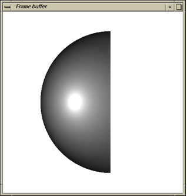Figure 13. Target geometry.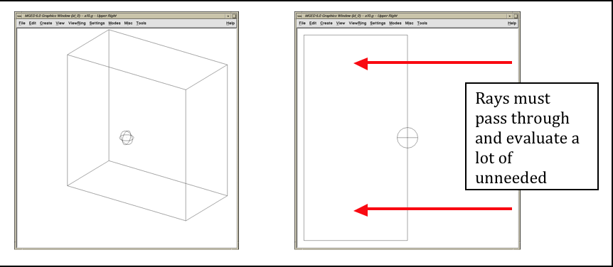Figure 14. Example of an Overly Large Bounding Primitive.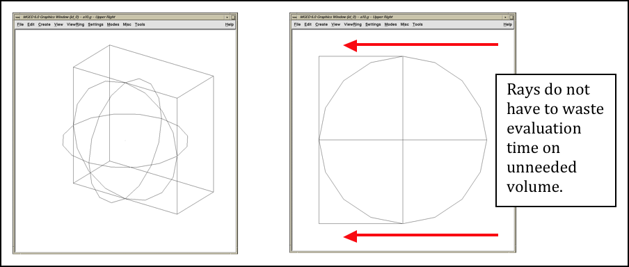Figure 15. Example of a compact bounding primitive.The half space is a prime example of an overly large bounding primitive. Because its extent is infinite, it is always larger than needed. Therefore, whenever possible, the modeler should use an arb8 or other primitive that can be dimensioned to meet the modeling needs.
-
Consider the possibility of articulations, animations, and presentations: Sometimes models need to be able to simulate movement in parts and personnel or to show unique views for presentation purposes. Unfortunately, the modeler (or even the user) cannot always predict all the possible uses at the outset of a project. Therefore, it is wise, especially in organizations that use many different types of model applications, to try to design and build models with the thought that they may need to be articulated, animated, or presented in different configurations at some point.
For articulation and animation, this generally means that objects that normally move together (e.g., components on a helicopter rotor, tank turret, etc.) should be grouped together in assembly combinations (as shown in Figure 15).
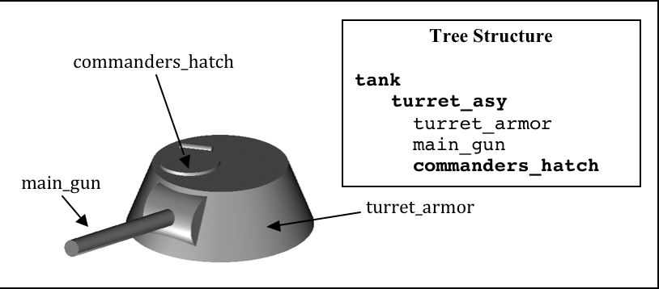Figure 16. Example of grouping objects for articulation.In the example shown in Figure 15, we would want to create a turret_asy assembly with turret_armor, main_gun, and commanders_hatch in it.
Also, as discussed in Lesson 16 of Volume II (Butler et al., 2001), specialty models or assemblies can be made to simulate changes in model configuration (e.g., personnel hatches opened/closed, crew compartments occupied/unoccupied, fuel tanks full/half full/empty, etc.) or to show views not normally seen (e.g., transparent skin or cross-sectional cutouts to show internal components, similarly colored components to show subsystem categorization, etc.). Specialty models usually involve copying the original model or assembly, altering the copy to achieve the special effect, and then substituting in the copy as needed.
-
Understand and use Boolean operations properly: Because Boolean operations play such a vital role in building geometry, it is important that the modeler possesses a good understanding of them. As shown in Table 4, a combination is the BRL-CAD database record that stores Boolean operations. It can take one of three forms:
-
Primitive shape combination — a combination that intersects, subtracts, or unions primitive shapes. This combination does not actually occupy 3-D space.
-
Region — the lowest-level combination that assigns material properties to geometry and occupies 3-D space. Because it is impossible for two or more objects to occupy the same physical space, it follows that one region cannot be unioned into or intersected with another region (e.g., a wheel cannot occupy the same space as the axle that connects to it). Conversely, subtraction is valid (e.g., subtracting a wall-mounted radio from the wall on which it hangs). For a reminder of how Boolean combinations work, see Figure 16.
-
Assembly combination — a type of combination that associates two or more regions or other combinations together.
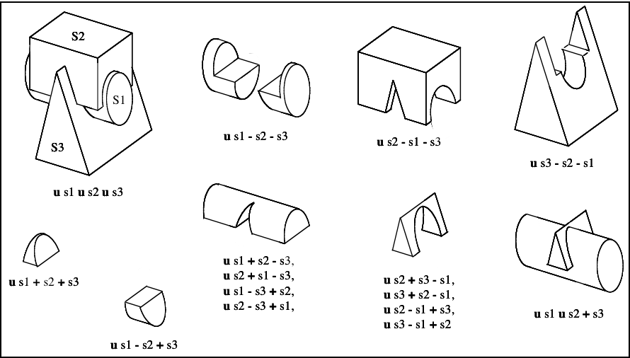Figure 17. Sample Boolean operations.Combinations can be created with a variety of commands, depending on the user’s requirements. These commands include the following:
-
comb — creates a combination using Boolean expressions in GIFT [2] format. Proceeding left to right, intersections (+) and subtractions (") are performed before unions (u). For example, the command
comb comb_name u a - b + c
is evaluated as
((a - b) + c)
-
c — creates a combination using parenthetically ordered Boolean expressions. Where no order is indicated, intersections are performed before subtractions or unions, and then subtractions and unions, which have equal precedence, are performed left to right.
-
r — creates a region out of primitive shapes or assembly combinations using Boolean expressions in GIFT format. Unless the user specifies otherwise, default region ID, air code, line-of-sight density, and GIFT material values are assigned.
-
g — creates a combination by automatically unioning all user-specified elements together. Thus, this command does not accept any sort of Boolean operators from the user. [3]
In addition, there are several general recommended practices when dealing with Boolean operations. They are as follows:
-
Start with a positive volume: The modeler must start with a positive volume before any subtraction or intersection operations are performed. If you are using GIFT notation, this means that you must start with a union operator. If you are using fully parenthesized standard notation, this means that you must specify an object before specifying a subtraction or intersection from it.
-
Be mindful of the order of Boolean operations: The modeler should make sure unions, intersections, and subtractions are properly ordered in the region structure to achieve the desired effect. For example, imagine that a modeler wants to subtract a hole in a region named bolt.r. As shown in Figure 17, if that region consists of two unioned primitives—head.s and shaft.s—the subtraction in the region must follow the shaft primitive. Alternatively, if the hole is subtracted from the head, the subtraction will have no effect because head.s and hole.s do not share any volume.
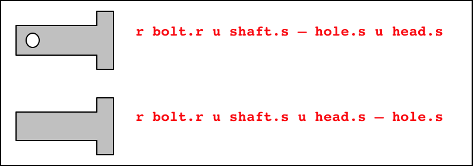Figure 18. Properly (top) and improperly (bottom) ordered regions.Note that in BRL-CAD releases 6.0 and later, fully parenthesized Boolean expressions are available for the c command. This allows the user to designate operator precedence on the command line based on standard parenthetical notation as opposed to the order-of-occurrence and union-last methodology, which is the previously described functionality in BRL-CAD.
-
-
Follow or develop standardized conventions for colorizing objects: When displaying a complex model, it is sometimes difficult for the user to visually differentiate one system, subsystem, or component from another. Also, it is not always clear as to which components belong to which systems/subsystems. Therefore, if possible, it is good practice to follow a standardized RGB (red-green-blue) color scheme for commonly modeled/analyzed systems (e.g., engine, suspension, communications, etc.).
Table 8 shows some RGB colors traditionally used in MGED (out of a possible 17 million color combinations between black [0 0 0] and white [255 255 255]) (Applin et al., 1988). Table 9 shows some commonly used system-color assignments for various ground and air target descriptions (as drawn in a graphics display window with a black background) (Robertson et al., 1996; Winner et al., 2002).
-
Take advantage of advanced/automation modeling tools: BRL-CAD offers many tools that can help users perform advanced functions or automate complex or tedious aspects of the geometry development process. Examples of some these tools, which are discussed in Appendices A-F, include the pipe primitive (which can automate the building of wiring or hydraulic lines), the projection shader (which can paste words or images onto geometry instead of having to build them), the extruded bitmap (which can turn two-dimensional objects [e.g., a building floor plan] into 3-D geometry [e.g., walls]), the .mgedrc file (which can create customized shortcuts for many MGED operations), the Build Pattern tool (which can automatically replicate objects in a specified pattern), and the build_region command (which can automatically build regions by grouping together similarly named objects).
| Color | RGB Value |
|---|---|
Aquamarine |
112 219 147 |
Medium aquamarine |
50 204 153 |
Black |
0 0 0 |
Blue |
0 0 255 |
Cadet blue |
95 159 159 |
Corn flower blue |
66 66 111 |
Dark slate blue |
107 35 142 |
Light blue |
191 216 216 |
Light steel blue |
143 143 188 |
Medium blue |
50 50 204 |
Medium slate blue |
127 0 255 |
Midnight blue |
47 47 79 |
Navy blue |
35 35 142 |
Sky blue |
50 153 204 |
Slate blue |
0 127 255 |
Steel blue |
35 107 142 |
Coral |
255 127 0 |
Cyan |
0 255 255 |
Firebrick |
142 35 35 |
Gold |
204 127 50 |
Goldenrod |
219 219 112 |
Medium goldenrod |
234 234 173 |
Green |
0 255 0 |
Dark green |
47 79 47 |
Dark olive green |
79 79 47 |
Forest green |
35 142 35 |
Lime green |
50 204 50 |
Medium forest green |
107 142 50 |
Medium sea green |
66 111 66 |
Medium spring green |
127 255 0 |
Pale green |
143 188 143 |
Sea green |
35 142 107 |
Spring green |
0 255 127 |
Yellow green |
153 204 50 |
Dark slate gray |
47 79 79 |
Dim gray |
84 84 84 |
Light gray |
168 168 168 |
Khaki |
159 159 95 |
Magenta |
255 0 255 |
Maroon |
142 35 107 |
Orange |
204 50 50 |
Orchid |
219 112 219 |
Dark orchid |
153 50 204 |
Medium orchid |
147 112 219 |
Pink |
188 143 143 |
Plum |
234 173 234 |
Red |
255 0 0 |
Indian red |
79 47 47 |
Medium violet |
219 112 147 |
Orange red |
255 0 127 |
Violet red |
204 50 153 |
Salmon |
111 66 66 |
Sienna |
142 107 35 |
Tan |
219 147 112 |
Thistle |
216 191 216 |
Turquoise |
173 234 234 |
Dark turquoise |
112 147 219 |
Medium turquoise |
112 219 219 |
Violet |
79 47 79 |
Blue violet |
159 95 159 |
Wheat |
216 216 191 |
White |
255 255 255 |
Yellow |
255 255 0 |
Green yellow |
147 219 112 |
| System | Color | RGB Value |
|---|---|---|
Crew/passenger |
Tan |
200 150 100 |
Exterior armor [4] |
Gray |
80 80 80 |
Fuel system |
Yellow |
255 255 0 |
Armament (not ammunition) [4] |
Gray |
80 80 80 |
Propellant |
Magenta |
255 0 255 |
Projectiles |
Red |
255 0 0 |
Engine/propulsion [4] |
Blue |
0 0 255 |
Oil Lines/hoses |
Light brown |
159 159 95 |
Coolant lines/hoses |
Green |
0 255 0 |
Air lines/hoses |
Blue |
0 0 255 |
Drivetrain |
Cyan |
0 255 255 |
Driver/flight controls [4] |
Dark blue |
50 0 175 |
Suspension/rotor blades [4] |
Gray |
80 80 80 |
Tracks |
Dark brown |
104 56 30 |
Tires/roadwheel rubber [5] |
Gray |
80 80 80 |
Electrical |
Forest green |
50 145 20 |
Hydraulics |
Pink |
255 145 145 |
Communications/mission equipment package |
Lime green |
50 204 50 |
Fire control |
Peach |
234 100 30 |
Fire suppression |
Dark red |
79 47 47 |
|
A Final Word About Modeling Ease vs. Modeling Precision
Modelers can be tempted to use the "quickest" methods of creating and aligning objects (e.g., using mouse clicks to size objects and the shift/control grips and "eyeballing" to position them). However, using precision MGED tools (e.g., the analyze and extrude commands, the snap-to-grid feature, etc.), listing primitives, making temporary assemblies, etc., is often more efficient. In addition, as the user becomes more familiar with these tools and features, they become easier to use. For more information on these specific features, see the appropriate on-line help in MGED. |